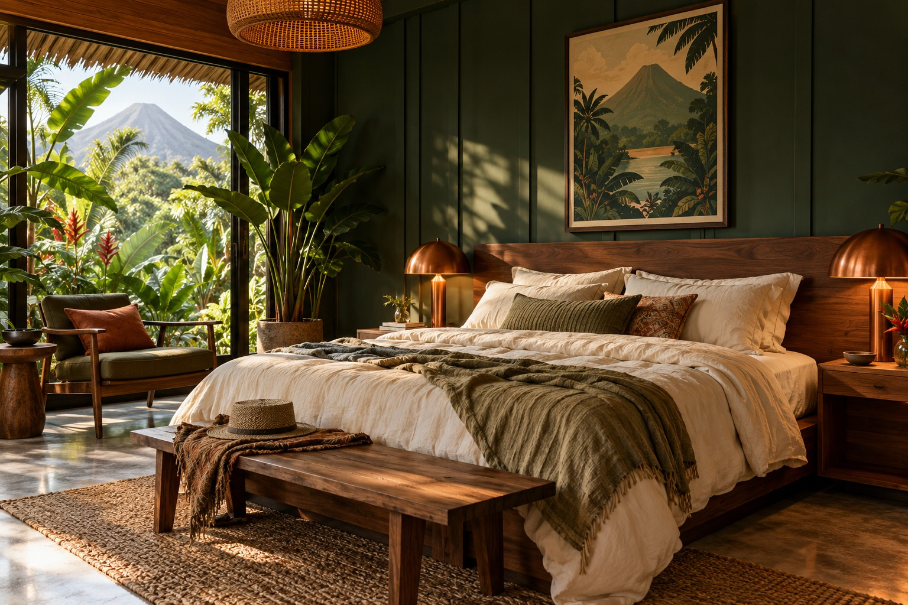
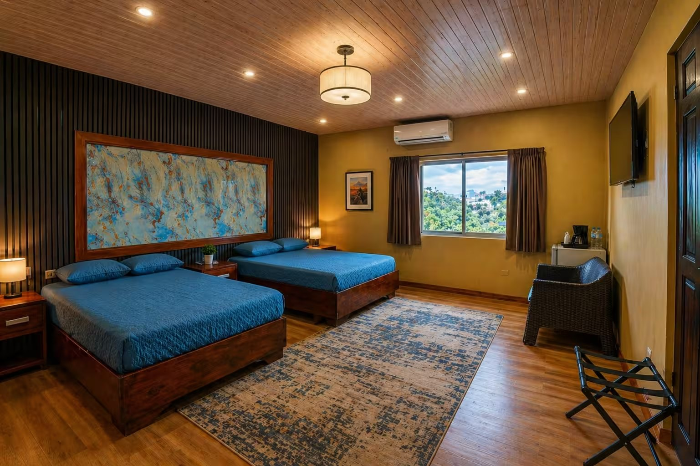
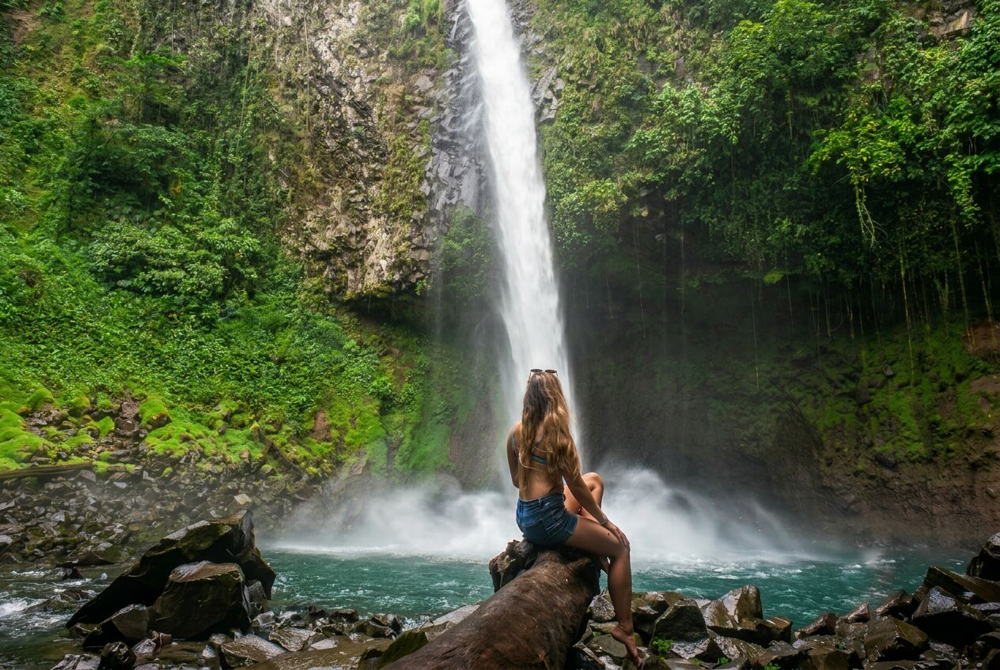
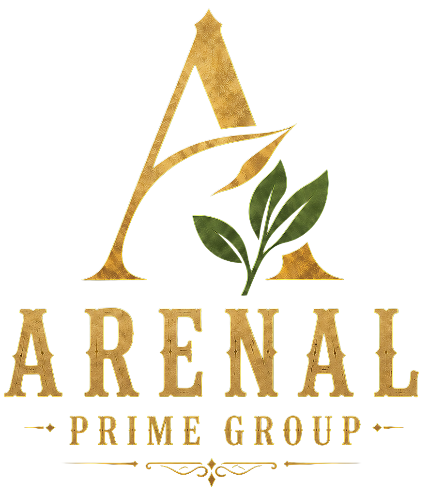
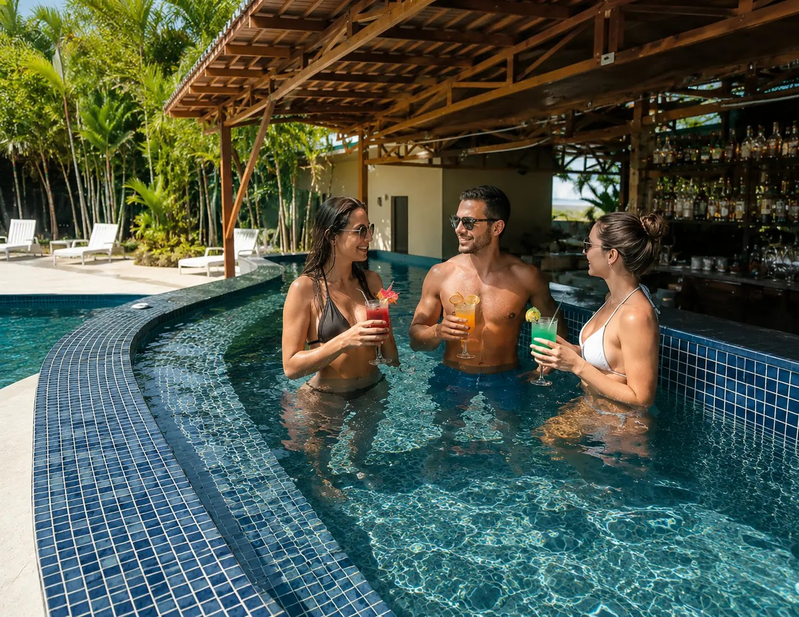

The town is yours.
Beside Central Park, with cafés, restaurants and local life around the corner. Explore on foot. Make your own discoveries.
Find us in town
A stay with soul.
A meeting point for curious people, right in the heart of La Fortuna.
Private rooms to call your own. A town to discover on foot. Adventures worth getting up for. The Social brings it all together, beside Central Park.
Come for Arenal. Stay for the connections.
Find your roomFor slow mornings.
And whatever comes after.

THE SOCIAL / CURRENT ROOMSYour private base for a solo adventure. Head out into Arenal, then come home to a space of your own.
Room configurations and current rates are shown on our official booking page.
This image is an AI design concept, not a photograph of bookable accommodation.
Wake up in the middle of it all.
Take the day anywhere.

A new tower, a food hall and Bar Imperial. The next chapter of The Social is taking shape in the heart of La Fortuna. These spaces are in development and are not included as current guest facilities.
Meet Arenal Prime Group
The Social is part of Arenal Prime Group, bringing together places to stay, gather and explore in La Fortuna. Each has its own personality, with Costa Rica at the heart of the experience.
Settle into a private room, explore town at your pace and make room for unexpected conversations.
Find my roomBeside Central Park, in downtown La Fortuna, Costa Rica. Restaurants, cafés, shops and tour operators are within walking distance.
The pool and jacuzzi are at Arenal Backpackers Resort, approximately 500 metres away. Access is included for The Social guests.
Our current property offers private single, double and triple room options. Check the official reservation page for configurations, rates and conditions. Images labelled as design concepts are not photographs of bookable accommodation.
Tell us your dates, group size and room preferences through WhatsApp. Our team will help review the options.
WhatsApp
Life’s better
a little social.

ARENAL BACKPACKERS RESORT · SISTER PROPERTYA little dip.
A long conversation.
Swap hiking boots for poolside downtime. Your stay includes access to the pool and jacuzzi at Arenal Backpackers Resort, our sister property approximately 500 metres away.
POOL & JACUZZI OFF-SITE